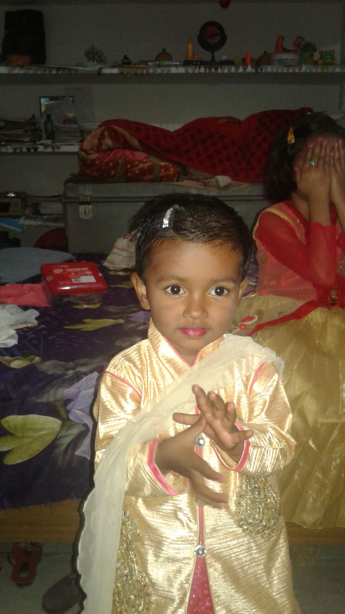
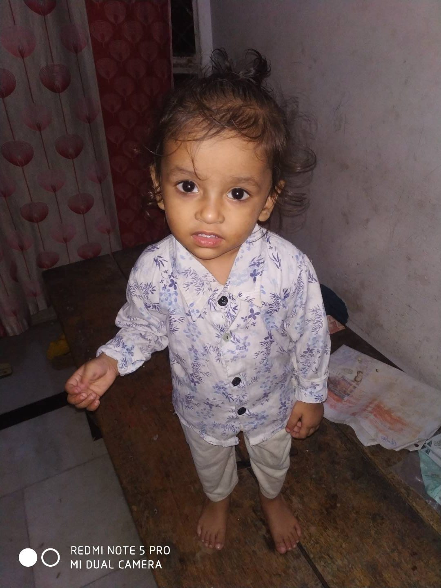
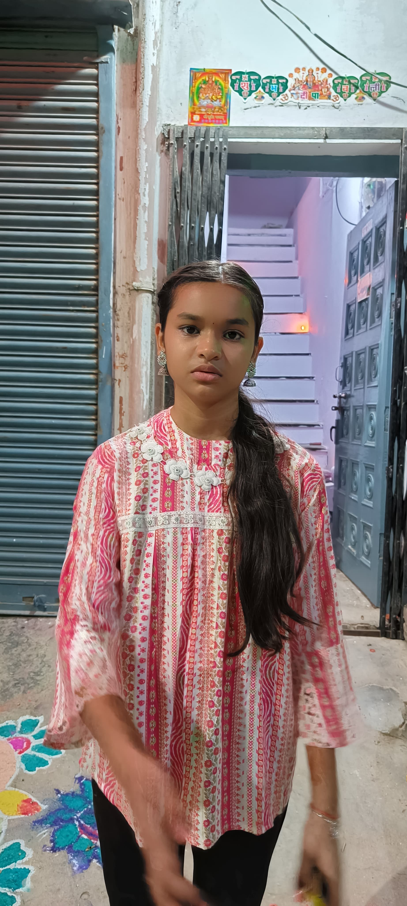

महागाथा: तत्त्वों के रक्षक बनाम तंत्र का सम्राट
"जब तारे बोलते थे, और वायु में मन्त्र तैरते थे,
तब जन्मी थी एक गाथा — न किसी शास्त्र में लिखी, न किसी ऋषि ने सुनी।
यह कथा है तत्त्वों के रक्षकों की... और एक ऐसे अंधकार की,
जो तंत्र के जाल में समस्त संसार को बाँधना चाहता था।
पर हर अंधकार को मिटाने के लिए, ब्रह्मांड एक योद्धा भेजता है —
वह मौन होता है, पर उसकी तलवार बोलती है।
यही कथा है... ब्लैक योद्धा विवेक की।"
पात्रों के नाम
विवेक
ब्लैक योद्धा - संहार का अधिपति
चीकू
व्हाइट योद्धा धर्वित - वायु की अदृश्य प्रतिक्षक
नन्ही
अग्नि की कन्या
पिकू
जल-मन का स्वामी
दिशांत
पृथ्वी का प्रहरी
नैना
मन्त्रविद्या की ब्रह्मविदुषी
ध्वनि गाथा
शक्तियाँ
⚔️ 1. ब्लैक योद्धा विवेक (Black Yoddha Vivek)
संहार का अधिपति, न्याय का रक्षक, मौन में क्रोध की ज्वाला
शक्तियाँ:
- तत्त्वग्रहण: पाँचों तत्त्वों को निगलकर तलवार में समाहित करना
- मनोभ्रांति: शत्रु के दिमाग में भ्रम की दुनिया बनाना
- कालमंथन: समय को रोकना या मोड़ देना
- शून्यस्पर्श: वार के बाद केवल शून्यता शेष रहती है
- निशाशस्त्र: सूर्य-चंद्र की भस्म से बनी तलवार
🌪 2. व्हाइट योद्धा धर्वित (White Yoddha Dharvit)
उजाले की प्रतीक, वायु की गति से तेज, विवेक की छोटी बहन
शक्तियाँ:
- अदृश्यता: स्वयं को हवा में विलीन करना
- वायुगति: मन की गति से भी तीव्र
- वायुधार: आत्मा को चीरने वाली वायु-कटार
- सफेद आभा का कवच: काले तंत्र से रक्षा
- स्पष्ट दृष्टि: भ्रम और छल को भेदना
🔥 3. नन्ही — अग्नि की कन्या
अग्निध्यान से उत्पन्न, अग्नि की संतान
शक्तियाँ:
- धूमकेतु तलवार: आकाशीय अग्नि से बनी तलवार
- लपटों की साँस: मुँह से आग निकाल सकती है
- ताप प्रभाव: भूमि को जलाना
- अग्निस्नान: खुद को आग में बदलना
🌊 4. पिकू — जल-मन का स्वामी
नीरकला साधक, परिवर्तन का स्वामी
शक्तियाँ:
- जल रूपांतरण: शरीर को जल में बदल सकता है
- जलरूपी जीव: पानी के जीव उत्पन्न करना
- समुद्र आदेश: लहरों को नियंत्रित करना
- विष जल निर्माण: जल को ज़हर में बदलना
🌍 5. दिशांत — पृथ्वी का प्रहरी
धरती का चेतन योद्धा, चट्टानों का स्वामी
शक्तियाँ:
- धरातल जागरण: भूमि को जीवित करना
- पर्वत प्रहार: एक प्रहार में पर्वत भी दरक जाए
- भूमि कवच: ज़मीन से बना सुरक्षा कवच
- भूकंप नियंत्रण: शत्रु को अस्थिर करना
🧠 6. प्राचार्या नैना — मन्त्रविद्या की ब्रह्मविदुषी
शब्दों की देवी, भ्रम की अधिष्ठात्री
शक्तियाँ:
- ध्वनिशक्ति: मन्त्रों से भ्रम उत्पन्न करना
- विचार-पठन: विचार पढ़ सकती है
- मन्त्र कवच: शब्दों से सुरक्षा करना
- मनोहिंसा: मानसिक आघात देना
🐉 7. तंत्र सम्राट विराट (Tantra Samrat Virat)
काले तंत्र का सम्राट, आत्मा व्यापारी
शक्तियाँ:
- आत्मा संग्रहण: मृत योद्धाओं की आत्मा से शक्ति लेना
- तांत्रिक रूपांतरण: 1000 मुख वाला राक्षस बनना
- कालकंधा तलवार: आत्मा चुरा लेने वाली तलवार
- मन्त्र भ्रम: दृष्टि और सोच को बदल देना
- काला कवच: तांत्रिक अंधकार का सुरक्षा कवच
दुश्मन
🐉 तंत्र सम्राट विराट (Tantra Samrat Virat)
काले तंत्र का सम्राट, आत्माओं का व्यापारी, अंधकार का राजा
- उसने प्राचीन नरबलि यज्ञों से अमानवीय शक्ति प्राप्त की
- उसका तंत्र मंत्रों से नहीं, आत्माओं के व्यापार से चलता था
- वह "कालकंधा" नामक तलवार धारण करता था, जो आत्माओं को चुरा लेती थी
- उसका शरीर तंत्र-प्रेतों से रक्षित था — हर वार, हर मन्त्र उससे टकराकर विफल हो जाता
- उसने पृथ्वी की समस्त राजशक्ति को झुका दिया, देवता, राजा और ज्ञानी सब उसके सामने नतमस्तक हो गए
शक्तियाँ:
- आत्मा संग्रहण: मरे हुए योद्धाओं की आत्मा को खींचकर अपनी शक्ति में बदल देना
- तांत्रिक रूपांतरण: स्वयं को राक्षसी रूप में बदलना — 1000 मुख और हज़ारों आँखों वाला तांत्रिक राक्षस
- कालकंधा तलवार: शापित तलवार जो एक वार में आत्मा को खींच लेती है
- मन्त्र भ्रम: अपने मन्त्रों से विरोधी की सोच, दृष्टि और दिशा को भ्रमित करना
- काला कवच: काले तंत्र से बना ऐसा कवच जिस पर किसी भी प्रकार की ऊर्जा या अस्त्र का प्रभाव नहीं होता
युद्धघोष:
"मैं अकेला नहीं, मैं काल हूँ। मैं अंधकार की अंतिम लहर हूँ। जो भी सामने आएगा, वह अस्तित्व ही खो बैठेगा।"
परिचय
नन्ही — अग्नि की कन्या
अग्निध्यान से जन्मी
तलवार: "धूमकेतु" (आकाशीय ज्वाला से बनी)
पिकू — जल-मन का स्वामी
"नीरकला" का साधक
जल को रूप बदलने की विद्या
दिशांत — पृथ्वी का चेतन प्रहरी
शक्ति: धरातल जागरण
भूमि को जीवित करता है

व्हाइट योद्धा धर्वित (चीकू)
वायु की अदृश्य प्रतिक्षक
हथियार: वायुधार — आत्मा तक को चीर देने वाली वायु-कटार
ब्लैक योद्धा विवेक
संहार का अधिपति
तलवार: निशाशस्त्र — सूर्य-चंद्र की भस्म से बनी, अस्तित्व को मिटा देने वाली
तंत्र सम्राट विराट
तंत्र का महारथी — आत्माओं से शक्ति प्राप्त करता है
योद्धाओं की झलक
परिणाम
इस महागाथा में, विवेक और उसके दोस्तों ने मिलकर आर्य कुमार देव और उसकी काली जागृति दुर्ग को हराया। उनकी एकजुटता, बलिदान और शक्तियों ने उन्हें विजयी बनाया।
यह कहानी हमें सिखाती है कि सच्ची मित्रता, बलिदान और एकजुटता से किसी भी अंधकार को मिटाया जा सकता है।